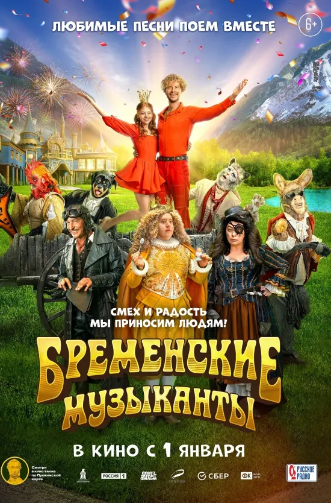
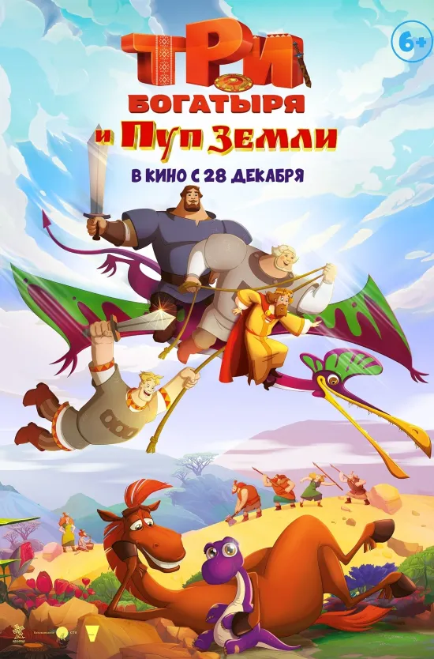
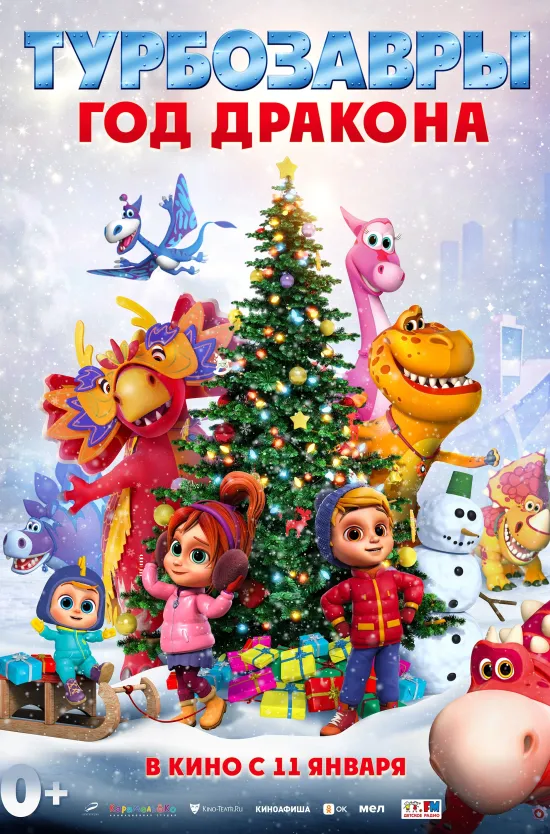
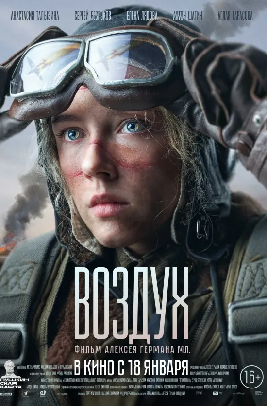
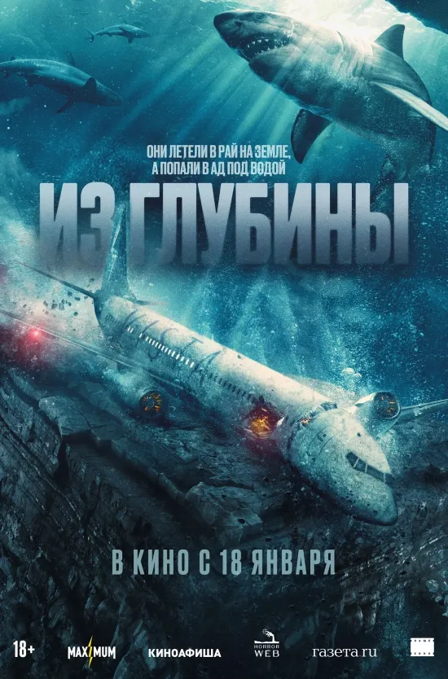
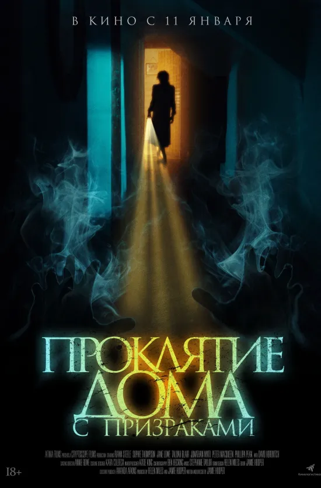
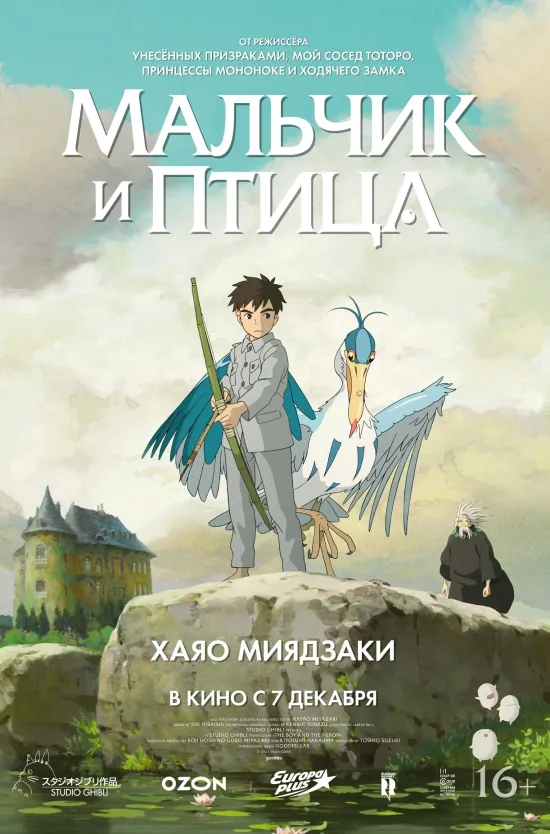
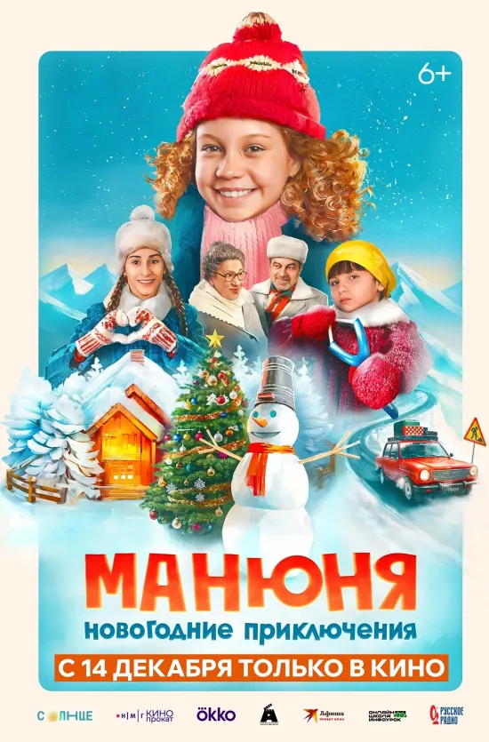
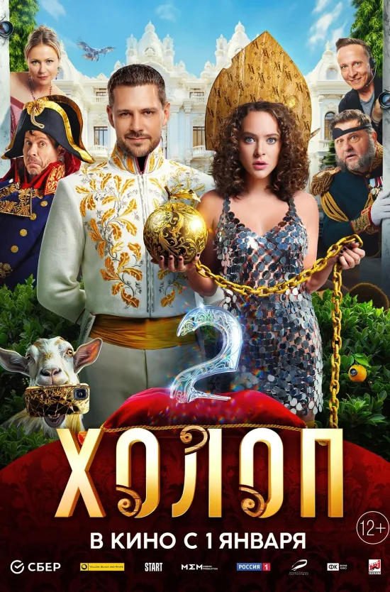
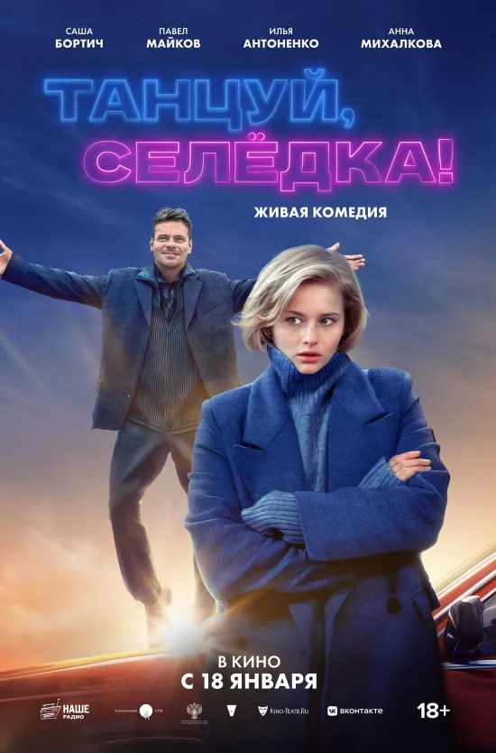

Фильмы в кинотеатре

Фильм Бременские музыканты

Фильм Три богатыря и Пуп Земли

Фильм Турбозавры. Год Дракона

Фильм Воздух

Фильм Неудержимые 4

Фильм Проклятие дома с призраками

Фильм Мальчик и птица

Фильм Манюня: Новогодние приключения

Фильм Холоп 2

Фильм Танцуй, Селёдка!